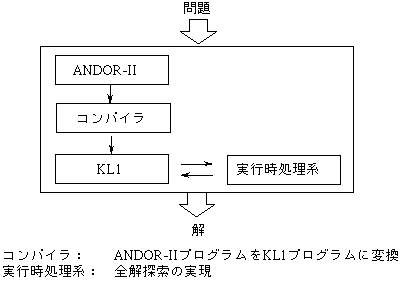

（３０）並列問題解決システム
マ シ ン：Multi-PSI
環 境：PIMOS
言 語：KL1
ソース量：0.3 MB
文 書：なし
概要
並列問題に対する簡明な記述力と高度の推論機能を提供するシステムである。
構成

機能
- AND,OR両並列性を備えた並列論理型言語ＡＮＤＯＲ−ＩＩにより、非決定
性を含む並列問題の記述を宣言的に行うことができます。
- ＡＮＤＯＲ−ＩＩプログラムは「色付け方式」を使ったコンパイル技法に
より並列性を最大限に引き出したＫＬ１プログラムに変換されます。
- OR分岐したあらゆる可能世界にわたる探索・推論を並列に実行します。
- OR分岐世界間で情報通信を行うというメタ機能を備えることによって、膨
大な探索世界数を絞り込んでいます。
- マルチＰＳＩ上で効率良く稼働するように負荷分散を行っています。
ＦＴＰ
- 並列問題解決システム [72K]

www-admin@icot.or.jp